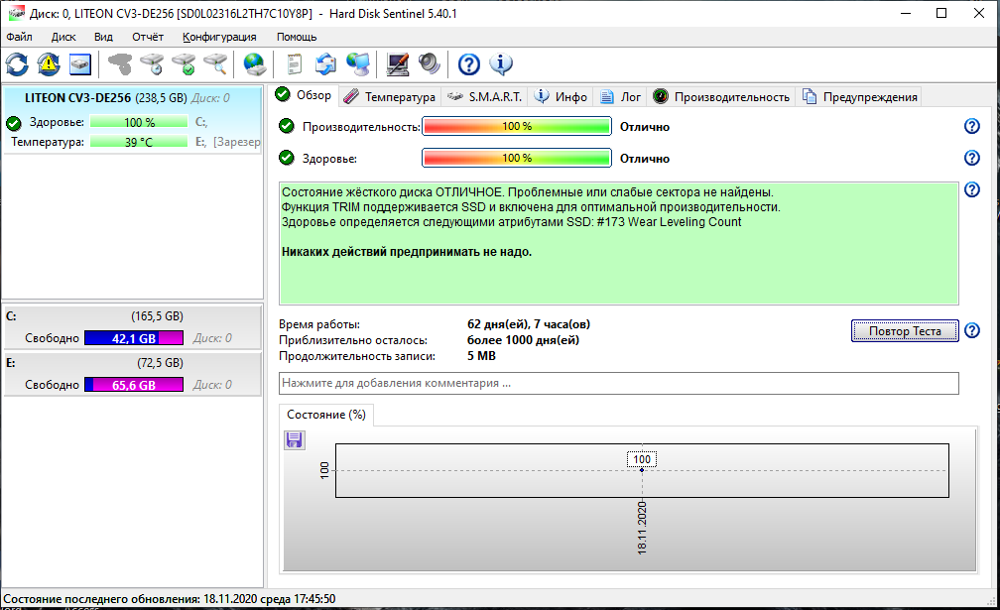
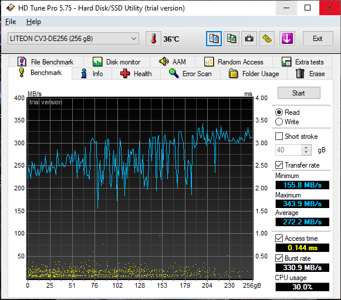
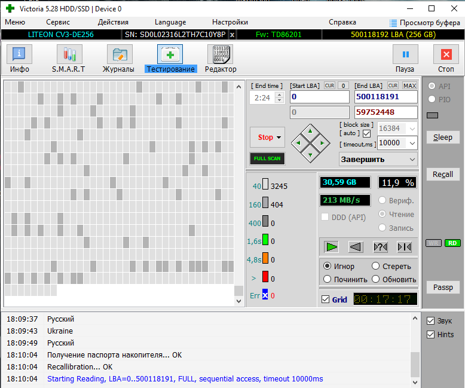

Тема: Управління Victorii та її аналогами.
Мета: ознайомитися з управліням Victorii та її аналогами.
- I.Знайти по 2 аналоги Вікторії
- II.Протестувати ваш накопичувач із допомогою вікторії та аналогів
- III.Зробити висновки щодо результатів тестування та порівняти їх
Висновки:
- 2 аналога які я знайшов це:HD Tune та Hard Disk Sentinel
- При запуску HDDsentitalpro(аналога Victorii) він зразу тестує диск(фото 1)
- При запуску HD Tune(аналога Victorii) потрібно натиснути кнопку старт щоб почати тестування(фото 2)
- При запуску Victorii потрібно натиснути кнопку тестування а потім Scan щоб почати тестування(фото 3)


